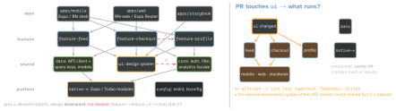

architecture · folio
In one line: A big RN codebase stays fast to change when it is a monorepo of packages
with one dependency direction — apps → features → data / UI → native
modules — each package exposing a public API ("exports"), boundaries
enforced by lint, an owner per package, a task graph that builds and
tests only what changed, and exactly one copy of react-native.
Download PDF Print view LaTeX source


The repo
- Workspaces (Yarn, pnpm, npm, Bun) symlink
packages/*intonode_modules; Nx or Turborepo add a task graph from those dependencies, input hashing, local + remote cache, and “affected” runs. - One
react-native, onereact: Expo — “duplicate React Native versions in a single monorepo are not supported”. Pin them in the app,peerDependenciesin packages; checknpm why react-native/pnpm why. - Metro: Expo SDK 52+ configures a monorepo automatically; bare RN adds the root to
watchFolders. RN 0.79 (Metro 0.82) resolvespackage.json"exports"and"imports"by default (opt out:resolver.unstable_enablePackageExports). - pnpm: isolated
node_modulescatches phantom (undeclared) deps; Expo supports it from SDK 54, elsenodeLinker: hoisted. - Native code autolinks from the app: a native dependency must be resolvable from
apps/mobile(Expo SDK 54autolinkingModuleResolution, automatic in SDK 55).
Packages and boundaries
- Feature package = vertical slice: screens, its navigator, hooks, query keys, analytics events. Public surface =
index.ts+"exports"; deep imports (feature-feed/src/x) are not resolvable. - Features never import features. Cross-feature needs go down (a shared
data/corepackage), through navigation (route + params), or through an injected interface the app shell wires up. - Enforce: Nx tags (
type:feature,type:ui,scope:checkout) +@nx/enforce-module-boundariesdepConstraints; orno-restricted-imports,import/no-cycle; TS project references for build order. - Ownership:
CODEOWNERSper package path → the owning team must approve; a package without an owner is where rot starts. - State by owner: server cache (TanStack Query) keys owned by the data package — invalidation from any feature uses the same key factory; client stores (Zustand) per feature; truly global = session, theme, flags only.
Example — public API, boundary rule, thin route
// packages/feature-feed/package.json
{ "name": "@acme/feature-feed",
"exports": { ".": "./src/index.ts" }, // nothing else
"peerDependencies": { "react": "*", "react-native": "*" } }
// eslint.config.mjs (root)
'@nx/enforce-module-boundaries': ['error', { depConstraints: [
{ sourceTag: 'type:feature',
onlyDependOnLibsWithTags: ['type:data', 'type:ui', 'type:core'] },
{ sourceTag: 'type:ui', onlyDependOnLibsWithTags: ['type:ui'] } ] }]
// apps/mobile/app/(tabs)/feed.tsx -- Expo Router route file
export { FeedScreen as default } from '@acme/feature-feed';Versioning, build, release
- Internal packages:
"workspace:*"— no versions, always head; only packages published outside (an SDK, the design system for another repo) get semver + Changesets. tsc -bwith project references (or Nxtypecheck) per package — incremental, and a cycle is a build error.- One native build per app; OTA channel per app +
runtimeVersion; a feature flag per risky feature so a bad feature is switched off, not hot-fixed. - Polyrepo instead? Only when teams must release independently — the price is version skew, cross-repo PRs and a published package for every shared change.
- Migrating a big app in: start with
config+ui, then carve one feature at a time out ofapps/mobile/src(strangler) — boundaries as warnings first, errors once the count reaches zero.
Navigation architecture
- The app shell owns the root (auth gate, tabs, modals); each feature exports its screens or a nested stack + typed
ParamList; the shell composes them and merges the features’ deep-link config. - Expo Router: routes are files in the app’s
app/; keep them one-line re-exports so features stay router-agnostic and testable. - Cross-feature jumps by route name + params (or a URL), never by importing a screen component.
Universal (iOS · Android · web)
- react-native-web renders
View/Text/Pressableas DOM; Expo Router gives Android, iOS and web one file-based navigation, with static rendering on web (SEO). - Platform files:
Map.native.tsx/Map.web.tsx(also.ios/.android) — the bundler picks; the interface lives in the shared file’s types. - Share logic and UI primitives; accept per-platform screens where UX differs (hover, keyboard, URL bar). Web bundle size and SSR-unsafe code (
window) are the tax.
Native modules package
packages/native-*: Expo Modules API (Swift/Kotlin) or a TurboModule spec + Codegen; a typed JS facade, a web / Jest fallback, its own changelog. Native changes bump the app’s runtimeVersion — OTA updates can’t ship them.
Brownfield — RN inside an existing native app
- Official path: native project moves into
ios/+android/of an RN project; host screens viaRCTReactNativeFactory(iOS) /ReactActivity+ReactHost(Android). One shared runtime; each RN screen is anAppRegistryname. - At scale: ship RN as a prebuilt XCFramework / AAR (e.g. Callstack’s react-native-brownfield CLI) so native teams need no Node toolchain; native keeps the navigation; data via initial props + a native-module/event contract.
Traps
- Two
reactcopies → “Invalid hook call”; tworeact-native→ native module / view registered twice. Dedupe, peer-depend. - A
shared/commonpackage everything depends on — a hidden monolith; split by purpose (ui,data,core). - Barrel
index.tsre-exporting a heavy module eagerly — startup cost in every importer. - Native dep declared only in a feature package — not autolinked, crash at runtime.
- Hoisting hides undeclared deps until a CI or pnpm install breaks them.
Remember
Apps → features → shared → native, never sideways · exports = the API · lint enforces · CODEOWNERS own · affected + cache · one react-native.